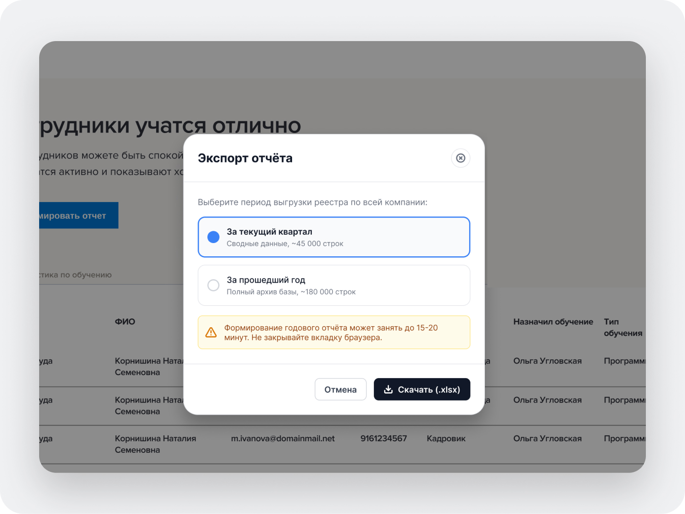
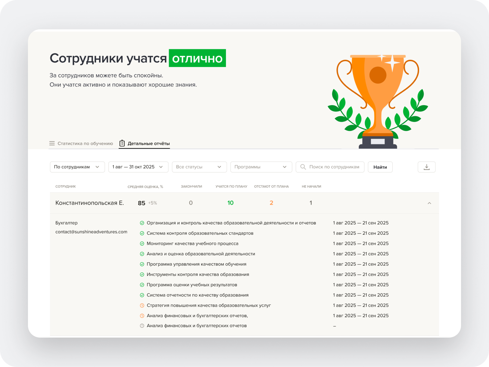
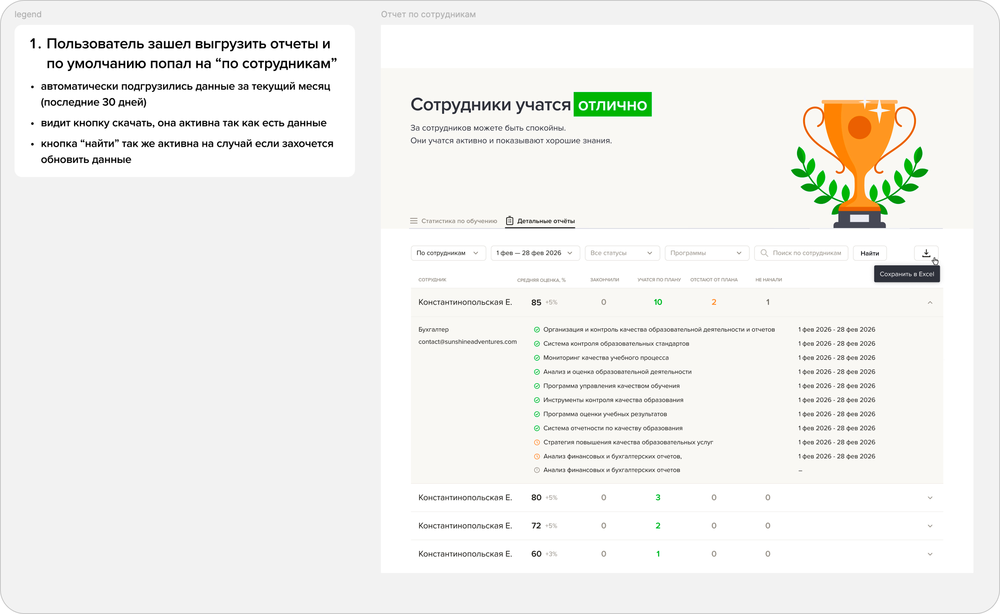
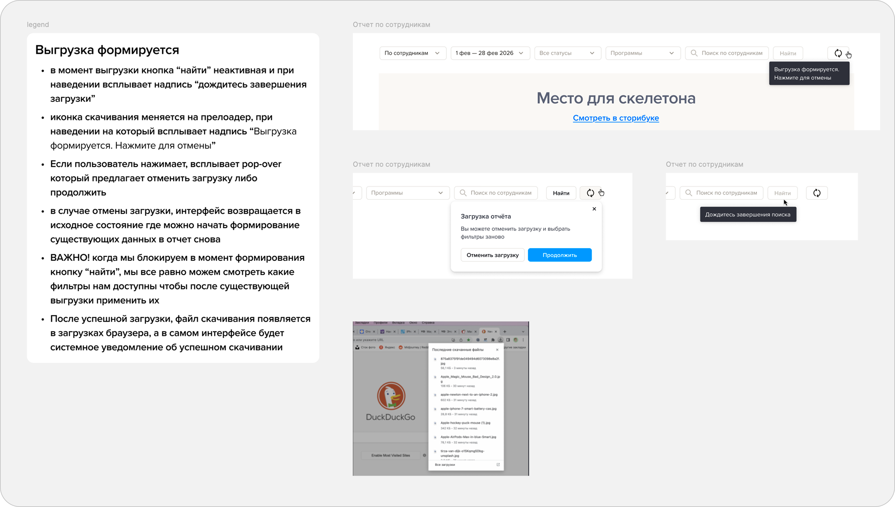
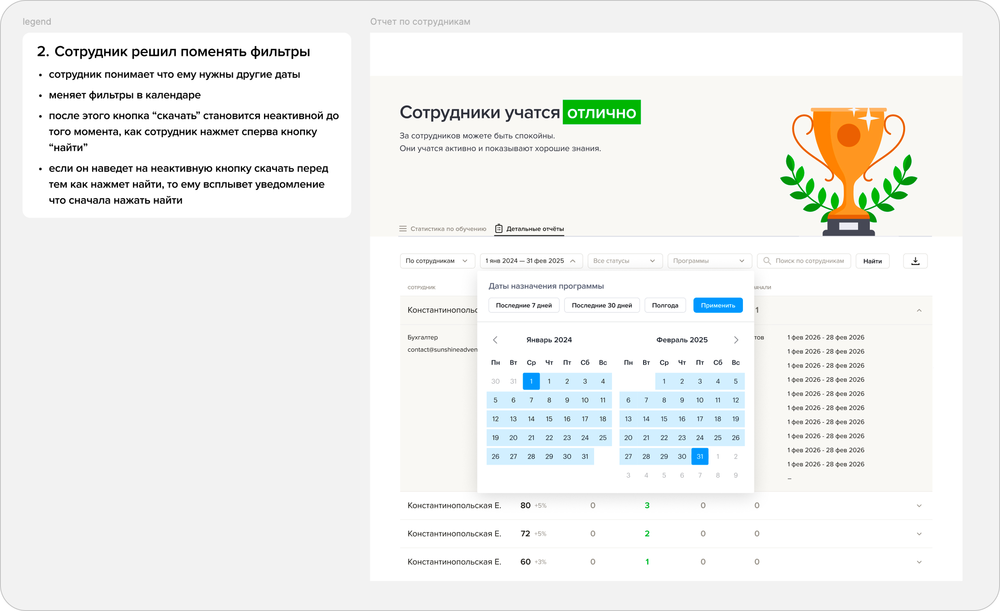
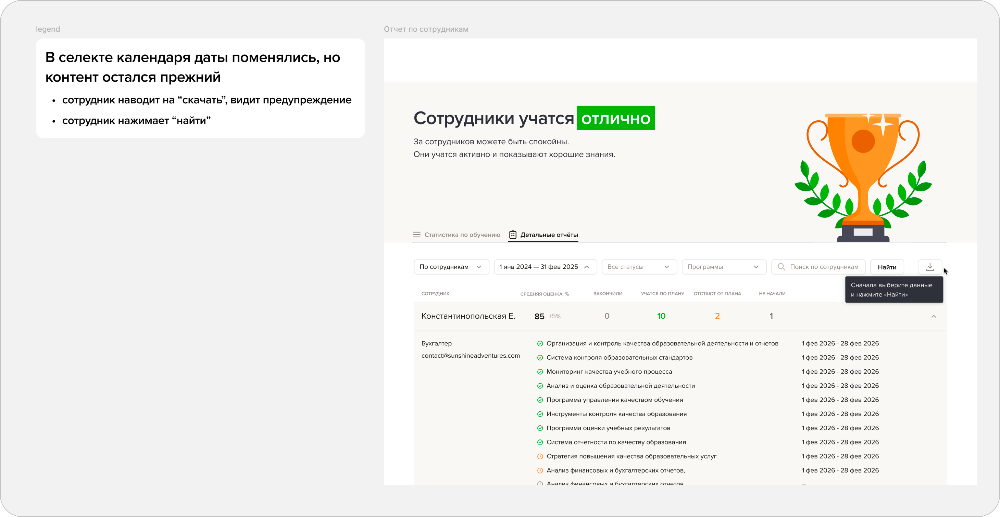
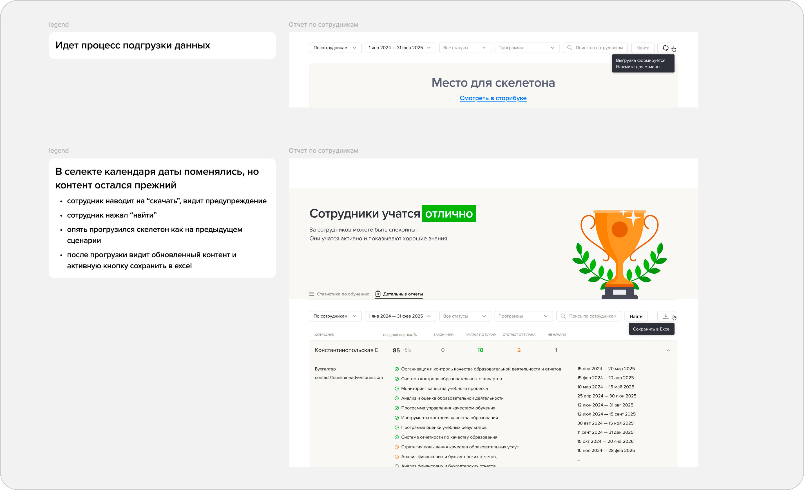
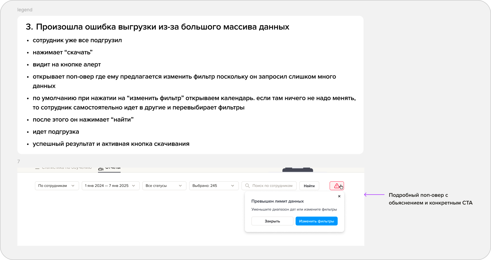
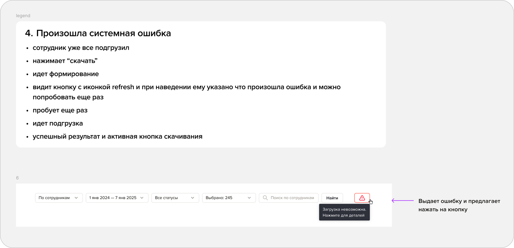
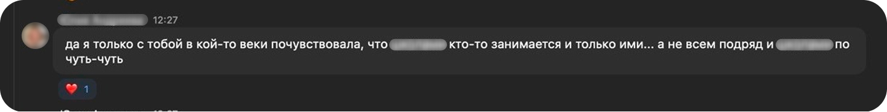

B2B-отчеты: как я избавила бухгалтеров от 15 минут ожидания
История о том, как одна старая кнопка заставляла людей уходить пить чай, пока база данных мучительно собирала файл. Я пересобрала логику выгрузок: разделила данные по типам, договорилась с разработчиками о безопасной схеме работы и защитила пользователей от ошибок при скачивании.
Кнопка, за которой уходили пить чай
В системе годами жила одна кнопка для выгрузки. Когда сервис только запускался и записей было мало, она работала быстро. Но со временем пользователей стало в разы больше, данных прибавилось, и формирование отчета превратилось в пытку.
Самое интересное, что в поддержку никто особо не жаловался. Бухгалтеры просто привыкли: нажимали на кнопку, блокировали страницу и буквально уходили пить чай на 10–15 минут.
Я пошла общаться с ними напрямую и быстро выяснила забавную вещь: из всей огромной простыни данных им в 90% случаев нужны были ровно 2 конкретные строчки. А весь остальной многостраничный файл скачивался впустую и просто не читался.

Старое окно предлагало выгрузить данные либо за квартал, либо за весь год сразу. Выбрать конкретную неделю или нужную программу было нельзя. Чтобы посмотреть успеваемость одного отдела, приходилось выгружать сотни тысяч строк и вручную чистить файл в Excel.
Разделение отчетов по смыслу и логика работы
Я разделила выгрузку по типам: Программы • Сотрудники • Группы • Вопросы • Уволенные. Теперь система запрашивает у базы только то, что реально нужно человеку прямо сейчас, не перегружая сервер.

Появилась нормальная панель фильтров, таблица с понятным статусом успеваемости и возможность быстро сохранить нужный срез в Excel прямо из рабочего экрана.

Так я на старте набросала для команды связи между типами данных, ограничения бэкенда и сценарии поведения кнопок, чтобы согласовать логику с разработчиками до того, как собирать чистовые макеты.
Сразу показываем данные, а не пустой экран
Мне хотелось, чтобы человек не тратил время на предварительные клики. Когда бухгалтер открывает вкладку, система сама подставляет самый частый сценарий:

По умолчанию открывается срез «По сотрудникам» за последние 30 дней. Кнопка скачивания уже активна: если нужен стандартный отчет, его можно забрать буквально за один клик.

Пока данные подтягиваются, таблица не прыгает и не мигает. Скелетоны держат форму колонок, сохраняя привычный каркас страницы.
Поиск компромиссов
Изначально я утвердила с разработчиками динамическую подгрузку на лету: кликнул на фильтр — таблица сразу сама обновилась. Но когда половина макетов уже была готова, ребята из бэкенда пришли и честно сказали: база такой поток параллельных запросов просто не потянет.
Я не стала упираться и перестроила логику: добавила явную кнопку «Найти», но сделала так, чтобы человек физически не мог ошибиться и скачать старый файл:

В шапку календаря я вынесла частые периоды («Последние 7 дней», «30 дней», «Полгода»), а внизу оставила выбор произвольных дат. Кнопка «Применить» фиксирует выбор в селекте.

Если даты в календаре поменяли, а кнопку «Найти» еще не нажали, в таблице всё еще висит старый контент. В этот момент я блокирую кнопку скачивания: по наведению всплывает подсказка «Сначала выберите данные и нажмите «Найти»». Это спасает от путаницы в отчетах.

Пока файл генерируется, кнопка превращается в крутилку. Если человек передумал или выбрал не то, он может нажать на нее и спокойно отменить выгрузку через всплывающее окно, не дожидаясь конца.
Человечные подсказки вместо белого экрана
Интерфейс не должен падать с молчаливой ошибкой 500. Если что-то пошло не так, пользователю нужно сразу понятно объяснить, что произошло и как это починить:

Если запросить массив за три года, сервер не зависнет наглухо. Всплывет окно с человеческой подсказкой: «Превышен лимит данных. Уменьшите диапазон дат или измените фильтры» и кнопкой, которая сразу открывает календарь.

Если отвалился интернет или моргнул сервер, кнопка показывает значок ошибки. Человек нажимает «Попробовать еще раз», и запрос уходит снова — без необходимости заново нащелкивать все фильтры.
Что это дало людям и бизнесу
Вместо нервной рутины с ожиданием у кофемашины бухгалтеры получили инструмент, который выдает нужные цифры за пару секунд.
А команда бэкенда вздохнула с облегчением: вместо гигантских запросов, подвешивавших базу данных, сервер стал получать легкие точечные задачи.
Как мы сработались с продактом
В сложных B2B-задачах мне важно не просто отрисовать экраны по ТЗ, а глубоко вникнуть в проблему, снять с продакта головную боль и довести всё до продакшена вместе с разработчиками. Финал релиза этого направления:
